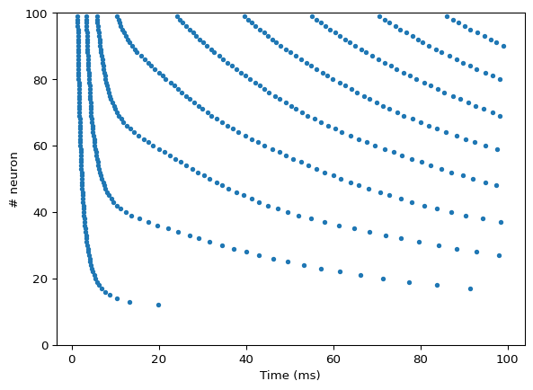

net = ann.Network(dt=0.1)
pop = net.create(100, ann.Izhikevich)
pop.i_offset= np.linspace(0.0, 30.0, 100)
m = net.monitor(pop, 'spike')
net.compile(silent=True)
net.simulate(100.)
data = m.get('spike')
t, n = m.raster_plot(data)
plt.figure()
plt.plot(t, n, '.')
plt.ylim(0, 100)
plt.xlabel('Time (ms)')
plt.ylabel('# neuron')
plt.show()